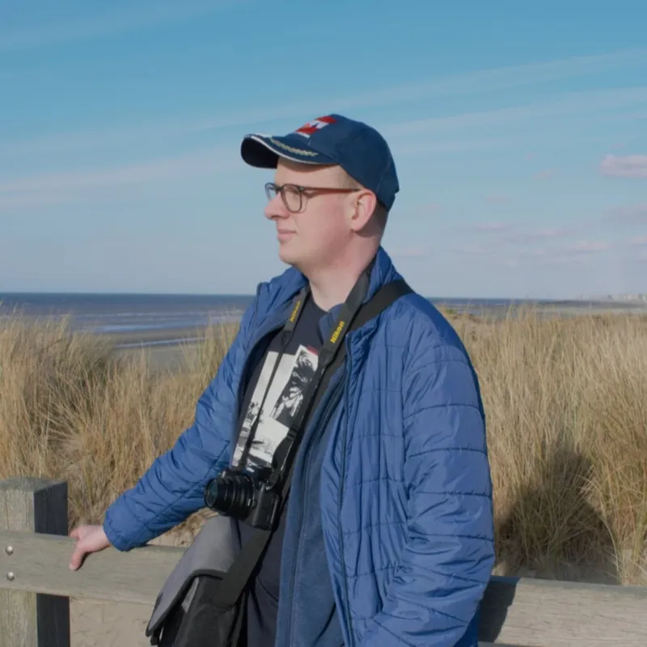
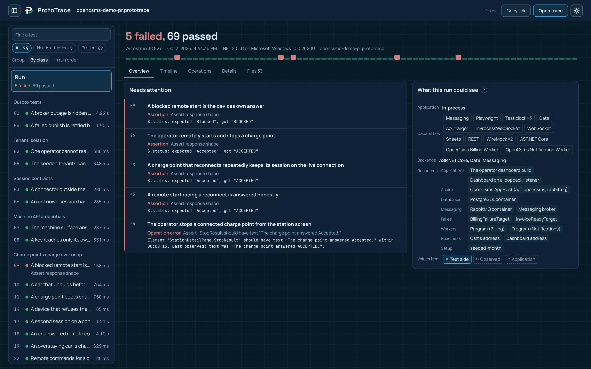

<!doctype html>
<html lang="en">
<head>
<meta charset="utf-8">
<!-- The pictures in the profile README, in the style of matthiasseys.com: the same fonts, colours and parts. Open with
     ?card=header, now, path or photos; tools/render.cjs photographs each into assets/. -->
<style>
@font-face { font-family: "Space Grotesk"; font-weight: 700; src: url("fonts/space-grotesk-700.woff2") format("woff2"); }
@font-face { font-family: "Manrope"; font-weight: 400 700; src: url("fonts/manrope-600.woff2") format("woff2"); }
@font-face { font-family: "JetBrains Mono"; font-weight: 400 600; src: url("fonts/jetbrains-mono-500.woff2") format("woff2"); }
@font-face { font-family: "Cormorant Garamond"; font-weight: 600; font-style: italic; src: url("fonts/cormorant-600i.woff2") format("woff2"); }
@font-face { font-family: "Cormorant Garamond"; font-weight: 500; font-style: italic; src: url("fonts/cormorant-500i.woff2") format("woff2"); }
:root {
  /* The developer site */
  --navy: #061520; --panel: #0d2433; --line: rgba(255,255,255,.09); --line-2: rgba(255,255,255,.16);
  --text: #e8f1f6; --soft: #c8d8e1; --muted: #93adbd; --faint: #829cac; --cyan: #19a8b5; --cyan-2: #5fd3dc; --amber: #e6b450;
  /* The photos site */
  --black: #110d0a; --cream: #f1ece6; --warm: #d9a46c; --sand: #e2d6c8; --dust: #b3a08c;
}
* { box-sizing: border-box; margin: 0; padding: 0; }
html, body { background: transparent; }
body { width: 1000px; font-family: "Manrope", system-ui, sans-serif; color: var(--text); -webkit-font-smoothing: antialiased; }
.card { position: relative; width: 1000px; overflow: hidden; border-radius: 18px; border: 1px solid var(--line-2); }
.mono { font-family: "JetBrains Mono", monospace; }
.grotesk { font-family: "Space Grotesk", sans-serif; }
.serif { font-family: "Cormorant Garamond", Georgia, serif; font-style: italic; }
.eyebrow { font: 600 13px "JetBrains Mono", monospace; letter-spacing: .2em; text-transform: uppercase; }
/* The developer site's background: navy with its faint grid. */
.dev-bg { background: linear-gradient(rgba(95,211,220,.05) 1px, transparent 1px) 0 0 / 28px 28px, linear-gradient(90deg, rgba(95,211,220,.05) 1px, transparent 1px) 0 0 / 28px 28px,
  radial-gradient(ellipse 60% 80% at 75% 40%, rgba(25,168,181,.18), transparent 70%), var(--navy); }

/* ---- header: the portal, the developer and the photographer side by side ---- */
.header { height: 360px; background: var(--black); }
.header .half { position: absolute; top: 0; bottom: 0; width: 50%; overflow: hidden; }
.header .half.dev { left: 0; }
.header .half.photo { right: 0; background: var(--black); }
/* Wider than the half, so the watermark in the corner stays outside it. */
.header .half.photo img { width: 112%; height: 112%; object-fit: cover; object-position: 74% 40%; filter: saturate(.85); }
.header .half.photo::after { content: ""; position: absolute; inset: 0; background: linear-gradient(90deg, rgba(17,13,10,.97), rgba(17,13,10,.78) 55%, rgba(17,13,10,.55)); }
.header .name { position: absolute; top: 28px; left: 0; right: 0; text-align: center; font: 600 14px "JetBrains Mono", monospace; letter-spacing: .32em; text-transform: uppercase; color: var(--text); }
.header .side { position: absolute; top: 0; bottom: 0; width: 330px; display: flex; flex-direction: column; justify-content: center; gap: 12px; }
.header .side.left { left: 46px; align-items: flex-end; text-align: right; }
.header .side.right { right: 46px; }
.header h1 { white-space: nowrap; }
.header .left h1 { font: 700 36px/1.06 "Space Grotesk", sans-serif; letter-spacing: -.01em; }
.header .left h1 span { color: var(--cyan-2); }
.header .right h1 { font: 600 48px/.98 "Cormorant Garamond", serif; font-style: italic; color: var(--cream); }
.header .right h1 span { color: var(--warm); }
.header .sub { font-size: 15.5px; line-height: 1.45; color: var(--soft); max-width: 300px; }
.header .right .sub { color: var(--sand); }
.header .portrait { position: absolute; left: 50%; top: 50%; width: 196px; height: 196px; margin: -98px 0 0 -98px; border-radius: 50%; padding: 4px;
  background: linear-gradient(90deg, var(--cyan-2), var(--warm)); box-shadow: 0 24px 70px rgba(0,0,0,.55); }
.header .portrait img { width: 100%; height: 100%; border-radius: 50%; object-fit: cover; display: block; }
.header .site { position: absolute; bottom: 24px; left: 0; right: 0; text-align: center; font: 500 13px "JetBrains Mono", monospace; letter-spacing: .16em; text-transform: uppercase; color: var(--muted); }

/* ---- now: ProtoTest, as the developer site's hero and proof cards show it ---- */
.now { height: 400px; }
.now .text { position: absolute; left: 44px; top: 0; bottom: 0; width: 420px; display: flex; flex-direction: column; justify-content: center; gap: 14px; }
.now .eyebrow { color: var(--cyan-2); }
.now h2 { display: flex; align-items: center; gap: 12px; font: 700 40px/1 "Space Grotesk", sans-serif; letter-spacing: -.02em; }
.now h2 em { padding: 3px 9px; border-radius: 6px; background: var(--cyan-2); color: #04202a; font: 700 17px "JetBrains Mono", monospace; font-style: normal; }
.now .lead { font-size: 15.5px; line-height: 1.55; color: var(--soft); }
.stats { display: grid; grid-template-columns: repeat(3, 1fr); gap: 10px; margin-top: 4px; }
.stat { padding: 12px 14px; border: 1px solid var(--line); border-radius: 12px; background: var(--panel); }
.stat b { display: block; font: 700 21px "Space Grotesk", sans-serif; color: var(--cyan-2); }
.stat span { font-size: 12.5px; color: var(--muted); }
.win { position: absolute; border-radius: 12px; overflow: hidden; background: #0b1822; border: 1px solid var(--line-2); box-shadow: 0 40px 80px -30px rgba(0,0,0,.85); }
.win .bar { height: 26px; display: flex; align-items: center; gap: 6px; padding: 0 12px; background: #132634; border-bottom: 1px solid rgba(255,255,255,.08); font: 500 11px "JetBrains Mono", monospace; color: var(--faint); }
.win .bar i { width: 8px; height: 8px; border-radius: 50%; background: #2d4352; } .win .bar i:first-child { background: var(--cyan); }
.win .bar span { margin-left: 8px; }
.win img { display: block; width: 100%; }
.now .win { left: 500px; top: 40px; width: 560px; }
.now .chip { position: absolute; left: 520px; bottom: 34px; padding: 10px 16px; border-radius: 10px; background: var(--cyan); color: #04202a;
  font: 700 14px "Manrope", sans-serif; box-shadow: 0 16px 40px -12px rgba(0,0,0,.7); }
.now .chip b { color: #8a1f1f; }

/* ---- path: the career as the developer site's timeline ---- */
.path { height: 270px; }
.path .head { position: absolute; left: 44px; right: 44px; top: 30px; display: flex; justify-content: space-between; align-items: baseline; }
.path .head .eyebrow { color: var(--cyan-2); }
.path .head p { font: 700 19px "Space Grotesk", sans-serif; color: var(--soft); }
.path .line { position: absolute; left: 44px; right: 44px; top: 112px; height: 2px; background: linear-gradient(90deg, rgba(95,211,220,.25), var(--cyan-2)); }
.path ol { position: absolute; left: 44px; right: 44px; top: 103px; display: grid; grid-template-columns: repeat(8, 1fr); list-style: none; }
.path li { display: flex; flex-direction: column; align-items: center; text-align: center; gap: 3px; }
.path li i { width: 20px; height: 20px; border-radius: 50%; border: 2px solid var(--cyan-2); background: var(--navy); margin-bottom: 10px; }
.path li.work i { background: var(--panel); border-color: var(--amber); }
.path li.now i { background: var(--cyan-2); box-shadow: 0 0 0 6px rgba(95,211,220,.18); }
.path li small { font: 500 12px "JetBrains Mono", monospace; color: var(--faint); }
.path li b { font: 700 15.5px "Space Grotesk", sans-serif; color: var(--text); white-space: nowrap; }
.path li span { font-size: 12.5px; line-height: 1.35; color: var(--muted); }
.path .legend { position: absolute; right: 44px; bottom: 22px; display: flex; gap: 20px; font: 500 12px "JetBrains Mono", monospace; color: var(--faint); }
.path .legend span::before { content: ""; display: inline-block; width: 9px; height: 9px; margin-right: 7px; border-radius: 50%; border: 2px solid var(--cyan-2); vertical-align: -1px; }
.path .legend span.work::before { border-color: var(--amber); }

/* ---- photos: the photos site, warm black and prints ---- */
.photos { height: 330px; background: radial-gradient(ellipse 60% 80% at 20% 30%, rgba(217,164,108,.14), transparent 70%), var(--black); border-color: rgba(217,164,108,.22); }
.photos .text { position: absolute; left: 44px; top: 0; bottom: 0; width: 300px; display: flex; flex-direction: column; justify-content: center; gap: 12px; }
.photos .eyebrow { color: var(--warm); }
.photos h2 { font: 600 44px/.98 "Cormorant Garamond", serif; font-style: italic; color: var(--cream); }
.photos h2 span { color: var(--warm); }
.photos .lead { font-size: 15px; line-height: 1.5; color: var(--sand); }
.photos .site { font: 500 12px "JetBrains Mono", monospace; letter-spacing: .14em; text-transform: uppercase; color: var(--warm); }
.photos .prints { position: absolute; right: 40px; top: 40px; bottom: 40px; left: 380px; display: grid; grid-template-columns: 1.35fr 1fr 1fr; grid-template-rows: 1fr 1fr; gap: 12px; }
.photos .prints figure { position: relative; overflow: hidden; border-radius: 6px; border: 3px solid var(--cream); box-shadow: 0 14px 30px rgba(0,0,0,.55); }
.photos .prints figure:first-child { grid-row: span 2; }
.photos .prints img { width: 100%; height: 100%; object-fit: cover; display: block; }
.photos figcaption { position: absolute; left: 0; right: 0; bottom: 0; padding: 18px 10px 7px; background: linear-gradient(0deg, rgba(17,13,10,.85), transparent);
  font: 500 10.5px "JetBrains Mono", monospace; letter-spacing: .1em; text-transform: uppercase; color: var(--cream); }
</style>
</head>
<body>
<div id="card"></div>
<script>
const IMG = 'https://img.matthiasseys.com/photos/';
const CARDS = {
  header: `
    <div class="card header">
      <div class="half dev dev-bg"></div>
      <div class="half photo"></div>
      <p class="name">Matthias Seys</p>
      <div class="side left">
        <p class="eyebrow" style="color: var(--cyan-2)">The developer</p>
        <h1>Building the tools<br><span>behind software.</span></h1>
        <p class="sub">Test automation, tooling and developer experience in C#/.NET.</p>
      </div>
      <div class="portrait"></div>
      <div class="side right">
        <p class="eyebrow" style="color: var(--warm)">The photographer</p>
        <h1>An eye<br><span>for detail.</span></h1>
        <p class="sub">Animals, people, music and streets. Every outing becomes a story.</p>
      </div>
      <p class="site">matthiasseys.com</p>
    </div>`,
  now: `
    <div class="card now dev-bg">
      <div class="text">
        <p class="eyebrow">Now · open source</p>
        <h2>ProtoTest <em>1.1</em></h2>
        <p class="lead">One integration test across your API, database, browser and devices, and when it fails, a trace that shows exactly why.</p>
        <div class="stats">
          <div class="stat"><b>1 trace</b><span>for every run</span></div>
          <div class="stat"><b>5</b><span>test runners</span></div>
          <div class="stat"><b>.NET 8–10</b><span>supported</span></div>
        </div>
      </div>
      <div class="win"><div class="bar"><i></i><i></i><i></i><span>trace.prototest.dev</span></div></div>
      <p class="chip">Open a real pull-request run: <b>5 failed</b>, 69 passed →</p>
    </div>`,
  path: `
    <div class="card path dev-bg">
      <div class="head"><p class="eyebrow">The path so far</p><p>From level editors to test frameworks.</p></div>
      <div class="line"></div>
      <ol>
        <li><i></i><small>2019</small><b>Parallelium</b><span>level editor</span></li>
        <li><i></i><small>2020</small><b>ProtoEngine</b><span>engine &amp; editor</span></li>
        <li><i></i><small>2020</small><b>sol2 ImGui</b><span>tools for devs</span></li>
        <li class="work"><i></i><small>2021–22</small><b>Larian</b><span>Baldur's Gate 3</span></li>
        <li class="work"><i></i><small>2022</small><b>DECK13</b><span>Atlas Fallen</span></li>
        <li class="work"><i></i><small>2023–26</small><b>GeoDynamics</b><span>300+ tests, 15 min</span></li>
        <li><i></i><small>2024</small><b>Handheld Co.</b><span>2k★ open source</span></li>
        <li class="now"><i></i><small>2026</small><b>ProtoTest</b><span>open source</span></li>
      </ol>
      <p class="legend"><span>own projects</span><span class="work">work</span></p>
    </div>`,
  photos: `
    <div class="card photos">
      <div class="text">
        <p class="eyebrow">Beyond code</p>
        <h2>Every picture<br><span>has a story.</span></h2>
        <p class="lead">Whatever catches my eye: animals, people, music and the streets around them.</p>
        <p class="site">photos.matthiasseys.com</p>
      </div>
      <div class="prints">
        <figure><figcaption>Otter · Pairi Daiza</figcaption></figure>
        <figure><figcaption>Ladiescover</figcaption></figure>
        <figure><figcaption>Chaco owl</figcaption></figure>
        <figure><figcaption>Harelbeke</figcaption></figure>
        <figure><figcaption>Cheetah</figcaption></figure>
      </div>
    </div>`,
};
document.getElementById('card').innerHTML = CARDS[new URLSearchParams(location.search).get('card')] || '';
</script>
</body>
</html>
